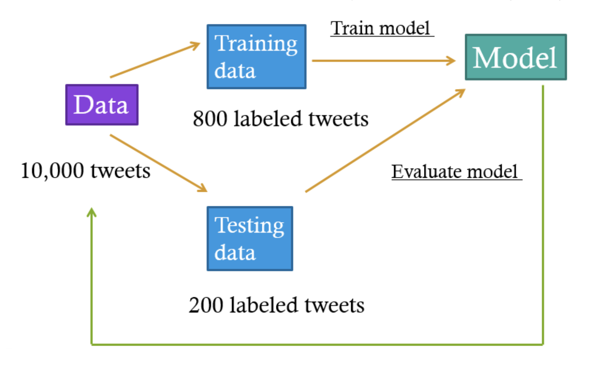

Q: I do not have a computational background, can I use your system?
Absolutely! If you follow the instructions, you should be all set. The system is specifically designed
to be usable for researchers without computational backgrounds. But we do recommend you read research
papers about the applications of the computational methods used here in the fields of journalism and
communication research. See the recommended readings below.
Q: Do you have any suggested research papers about the methods used in this project?
Topic modeling
Guo, L., Vargo, C., Pan, Z., Ding, W., Ishwar, P. (2016). Big social data analytics in journalism and mass
communication: Comparing dictionary-based text analysis and unsupervised topic modeling.
Journalism & Mass Communication Quarterly, 93(2), 332-359.
Guo, L. (2019). Ignorance or uncertainty: How the "black box" dilemma in big data research may
"misinform" political communication. In N. Stroud & S. McGregor (Eds), Digital discussions:
How big data informs political communication. New York: Routledge.
Deep learning
Liu, S., Guo, L., Mays, K., Betke, M. & Wijaya, D. (2019). Detecting frames in news headlines and
its application to analyzing news framing trends surrounding U.S. gun violence. In M. Bansal & A.
Villavicencio (Eds), Proceedings of the 23rd Conference on Computational Natural Language
Learning (pp. 504-514).
Akyürek, A. F., Guo, L., Elanwar, R., Betke, M., Ishwar, P. & Wijaya, D. (2020). Multi-label
and multilingual news framing analysis. In D. Jurafsky, J. Chai, N. Schluter, & J. Tetreault (Eds),
Proceedings of the 58th Annual Meeting of the Association for Computational Linguistics (pp. 8614-8624).
Guo, L., Mays, K., Zhang, Y., Wijaya, D. & Betke, M. (2021). What makes gun violence a (less)
prominent issue? A computational analysis of compelling arguments and selective agenda setting.
Mass Communication & Society.
Q: What is the difference between unsupervised and supervised machine learning?
Supervised machine learning involves user input on the dataset. The user says to the computer, "I have
a pattern that I want you to understand. Here are some examples of that pattern." and the computer
discovers the pattern involved as best it can.
Unsupervised machine learning does not involve user input on the dataset. The user wants to discover
patterns in the dataset at a scale or level of complexity that may not be easy for humans to perceive,
but they do not tell the computer what those patterns are. Instead, the computer tells the user what
patterns it discovers. The LDA topic modeling approach is an example of unsupervised machine learning.
Q: What is deep learning?
Deep learning is an advanced form of machine learning. The algorithm mimics the network of neurons in
a brain, which processes a large amount of input data and operates them through multiple layers. At
each layer, the network can learn increasingly complex features of the data and can be used to make
predictions. Deep learning is a very powerful tool and has been demonstrated to outperform traditional
machine learning in many contexts.
Q: What is media framing?
In communication research, to frame is "to select some aspects of a perceived reality and make them
more salient in a communicating text" (Entman, 1993, p. 52). Like any type of communication, news
involves framing. Ideology of a society, ownership of a news organization, media routine, as well as
individual media worker's preference all play some role, consciously or not, in shaping the news
content (Shoemaker & Reese, 1996).
Q: How to conduct a framing analysis?
Communication researchers have developed a variety of approaches to analyze media framing. One popular
quantitative approach is to first identify a list of frames and then manually classify news articles
into one of the identified frames. Only a certain number of frames are common in the news coverage
because one can frame an issue in multiple ways, but a frame must be shared on some level for it to
be communicable and effective (Reese, 2001). Therefore, journalists often use generic frames
in their reporting across a diverse range of issues, such as human interest, conflict, attribution of
responsibility, and economic consequences (Neuman, Just, & Crigler, 1992; Nisbet, 2010; Semetko &
Valkenburg, 2000). Regarding any particular issue, journalists also apply issue-specific frames.
For example, science reporters often use benefit- and risk-driven frames to help their
audience understand complicated scientific issues such as genetically modified organisms (Wang & Guo,
2018). The goal of framing analysis is to identify both generic and issue-specific frames.
Q: How long will it take to complete the analysis?
For topic modeling analysis (Step 1), our current system requires around 15 minutes to train on 1,000 documents.
For training a deep learning model (Step 4), it will take around 11 hours to train on 1,000 documents.
Generally, the time increase is linear with the number of documents for training.
Q: What if I want to make some changes to the topic modeling and/or the deep learning algorithms?
You may choose to customize some parameters through our web-based system (e.g., the number of the LDA
topics). In order to further fine-tune the algorithms, you will need to have some programming experience
and our code can be found on our Github page.
Q: Your system is called OpenFraming. Can I use your system to do other types of analysis, e.g., sentiment detection?
There are multiple ways to use our system.
You can choose to follow the recommended five steps to conduct a framing analysis.
You can use our LDA topic modeling tool (Step 1) to conduct a topic modeling analysis of
any issue of your interest. See the demo here.
If you have a labeled dataset to begin with (the labels can be frames, sentiment, topics, etc.),
you can use our tool to train a deep learning classifier (Step 4).
We also provide four trained deep learning classifiers on issues of gun violence, immigration,
tobacco, and same-sex marriage. If you are interested in one of these issues and you have relevant
textual data, you can use our existing classifiers (Step 5) to predict media frames for your data.
Q: What is LDA topic modeling?
The Latent Dirichlet Allocation (LDA) based topic modeling is a popular example of unsupervised machine
learning, which does not involve user input on the dataset. In conducting the LDA analysis, the text
is observed as a set of latent "topics" and these topics are distributed over words in a probabilistic
order. The output of the LDA topic modeling is a "topic matrix" with a list of keywords representing
each topic. Researchers will have to review the top keywords and decide on a label to represent the
meaning of each topic.
Q: What do you mean by a "document"?
A document is a single unit of text - a standalone entity. Examples of documents include news articles, tweets, and paragraphs.
Q: Is there a requirement for the minimum and maximum length of each document?
The size of a document can vary, but it has to be reasonably large. A typical document is about the
size of a news article, a paragraph, or a tweet (~280 characters). Single words or phrases will not
yield a productive analysis. Longer documents (a corpus of books, for example) can be analyzed, but
our system may take a very long time to handle the load.
Q: What is the minimum and maximum number of documents I should upload?
There is no absolute cutoff. Since LDA is an unsupervised method whose goal of "topic discovery" is
relatively vague, the minimum number of documents, and the number of topics to use depends on your end
goal. As a reference point, running LDA modeling on 50,000 general news headline datasets with 7-9
topics yields clearly distinct and recognizable topics that correspond to the typical news taxonomy
(i.e. war politics, sports, public safety, natural disasters, etc).
The maximum number of examples is determined by the maximum upload size the server currently accepts,
which is 10MB. The longer each document, the smaller the total number of documents allowed. For example,
10MB is equivalent to about 250,000 news headlines.
Q: What is a LDA "topic"? Is it equivalent to "frame"?
An LDA topic is not equivalent to a frame. Topics don't necessarily correspond to a way of talking
about or understanding an issue; they might instead correspond to different events that are covered as
part of the issue. We recommend you use the LDA topic modeling results to understand your data and help
you decide what frames to be included in the analysis. Oftentimes, the LDA topic modeling analysis can
help you discover potential issue-specific frames.
Q: Which deep learning algorithm do you use?
Our analytical framework incorporates the state-of-the-art language model BERT, which stands for
Bidirectional Encoder Representations from Transformers (Davlin et al., 2018). More specifically, in
order to analyze text in multiple languages, we use a recent extension of BERT: XLM-Roberta (Conneau et al., 2019).
BERT is one of the most successful models in natural language processing (Devlin et al., 2019).
Trained on a large text corpus (i.e. Wikipedia pages and books), the model produces embeddings (i.e.
vectors of numbers) to represent the meaning of sentences, taking into consideration the relationships
between words and the communication context. This approach has been proved superior to many other text
classification models that process each word separately (Devlin & Chang, 2018). On top of that,
XLM-Roberta is further trained on a large corpus of multilingual data, that is, 2.5TB of filtered web
data in 100 languages. The vector representations of text in any of the 100 languages the model is
pretrained on can then be used to generate insight into any text in the given language.
Q: What do you mean by a "document"?
A document is a single unit of text - a standalone entity. Examples of documents include news articles, tweets, and paragraphs.
Q: Is there a requirement for the minimum and maximum length of each document?
The size of a document can vary, but it has to be reasonably large. A typical document is about the
size of a news article, a paragraph, or a tweet (~280 characters). Single words or phrases will not
yield a productive analysis. Longer documents (a corpus of books, for example) can be analyzed, but by
design XLM-Roberta can only take at most 512 words as input. Generally, vector representation learning
of longer texts remains an open research problem in NLP since language has long-distance dependency
but current models are still limited in the amount/length of context they can represent.
Q: How many labeled documents should I provide?
This is not an easy question to answer as it depends on how hard the task is from a deep
learning perspective, and how much performance is needed. The rule of thumb in deep learning is, the
more the merrier. As a reference point however, you can keep in mind that on the Gun Violence Frames
Corpus (https://derrywijaya.github.io/GVFC),
using around 1,300 documents, we obtained 82-84% accuracy to classify 9 frames.
Q: What do you mean by a training and a testing set?
In supervised machine learning, we should evaluate the performance of the trained model before we decide
to use it. To that end, we usually will divide all the labeled documents into a training set and a
testing set. A training set is a dataset the model uses to learn the pattern it is supposed to
understand. A testing set is a dataset that the model uses to figure out how well it has learned this pattern.
Let's say our goal is to predict the frames of a sample of 10,000 tweets. We will first draw a sample
of 1000 tweets and manually label them. Then we will divide the 1,000 labeled tweets into a training
set of 800 tweets and a testing set of 200 tweets. We will train a machine learning model based on
learning the patterns of the 800 labeled tweets (the training set), and then use the model to predict
the frames of the 200 labeled tweets (the testing set) as if the tweets were not labeled. Finally, we
compare the predicted frames and the actually labeled frames so we will get an idea about the model
performance. If the model performance is good, we will then use the model to predict the remaining
unlabeled tweets (9,000).

Q: What is K-fold cross-validation?
To reduce the bias of selecting training and testing data, K-fold cross-validation is an effective
method to validate the model performance on multiple folds of the data. The OFAI implements 5-fold
cross-validation. Specifically, the user-labeled data will be randomly split into five folds. For each
fold, we take the documents in this fold as the testing set and the documents in the remaining four
folds as a training set. A model is trained on the training set and evaluated on the testing set.
Evaluation scores for the five models will be averaged and reported.
Q: What is considered "good" model performance?
OFAI provides three evaluation scores - precision, recall, and F-score - to assess the performance of the
trained models. Precision is the ratio of true positives to the total predicted positive observations.
For example, when predicting a given frame "mental health," the precision score measures out of all the
news headlines predicted as "mental health," how many of them are indeed coded as "mental health" by
human coders. Recall is the ratio of true positives to all observations in the actual case. In our
running example, it measures out of all the headlines coded as "mental health" by human coders, how
many of them are identified by the model. F-score is the weighted average of precision and recall.
If there is more than one frame under consideration (i.e., multiclass prediction), the average precision,
recall, and F-score will be reported. Using 5-fold cross-validation, five sets of precision, recall,
and F-score will be averaged and reported.
There are no hard rules to determine "good performance." In communication research, we usually aim for
at least 80% prediction precision and 80% prediction recall. In computer science research what is
considered good model performance depends on the difficulty of the task. Generally, a model is
considered good if it either outperforms or is comparable to previous state-of-the-art models on the
same benchmark data with performance measures differing for different tasks and/or different benchmark datasets.
Q: What do I do if the model performance is not good?
You can try a few things:
You should try to understand the "confusion matrix" (coming up soon) first. For example, if you
find the model always fails to distinguish between "unemployment" and "tax," you can consider
combining them into the single category "economy." Combining categories is helpful especially when
you have a lot of categories; this makes labeling an easier task for the model.
You can also add more labeled examples. If the pattern you are trying to teach the model is complex
(the labeling task involves a lot of subtleties like sarcasm, or the documents are short),
then you can try adding more labeled examples.
Q: How many unlabeled documents can your system predict?
The current file upload limit is 10MB. The number of documents that the system will accept for
prediction depends on the average size of each document. For example, 10MB is equivalent to about
250,000 news headlines. But you can upload multiple files and make the predictions one by one.
Q: I used one of the models to predict frame labels for my data, and I found the labels assigned to some documents do not make sense. Why does that happen?
Computers make mistakes, and sometimes a label that makes a lot of sense to a computer may not make
sense to us. Also, our training data may not be as recent as the data you are doing inference on. For
example, if the news coverage of an issue has changed drastically in recent times, we may not have
retrained our pretrained models to reflect that.
Q: I have a sample of labeled data that pertains to one of the topics. Should I use the existing models, or is it better to train a new model?
That depends on your purposes. Try using the existing models first. Are the frames similar to the frames you're
thinking about? Do the labels make sense for the work you are trying to do? If not, it may be necessary for you
to label your own dataset and train a new model. Otherwise, it makes more sense to use the existing model.
We usually consider 80% prediction accuracy and recall to be good performance. This means that around 20% of
the documents' predictions will be incorrect. If your labeling accuracy is well below this threshold, you may
want to generate your own model.
Q: Can you provide more information about the four pre-trained models?
To train the four pre-trained models on gun violence, immigration, tobacco, and same sex marriage
issues, we apply our Step 4 on the frame-labeled data on US gun violence issue (obtained from the Gun
Violence Frame Corpus (GVFC) dataset: https://derrywijaya.github.io/GVFC)
and the frame-labeled data on immigration, tobacco, and same sex marriage issues (obtained from
the Media Frame Corpus (MFC) dataset:
https://github.com/dallascard/media_frames_corpus).